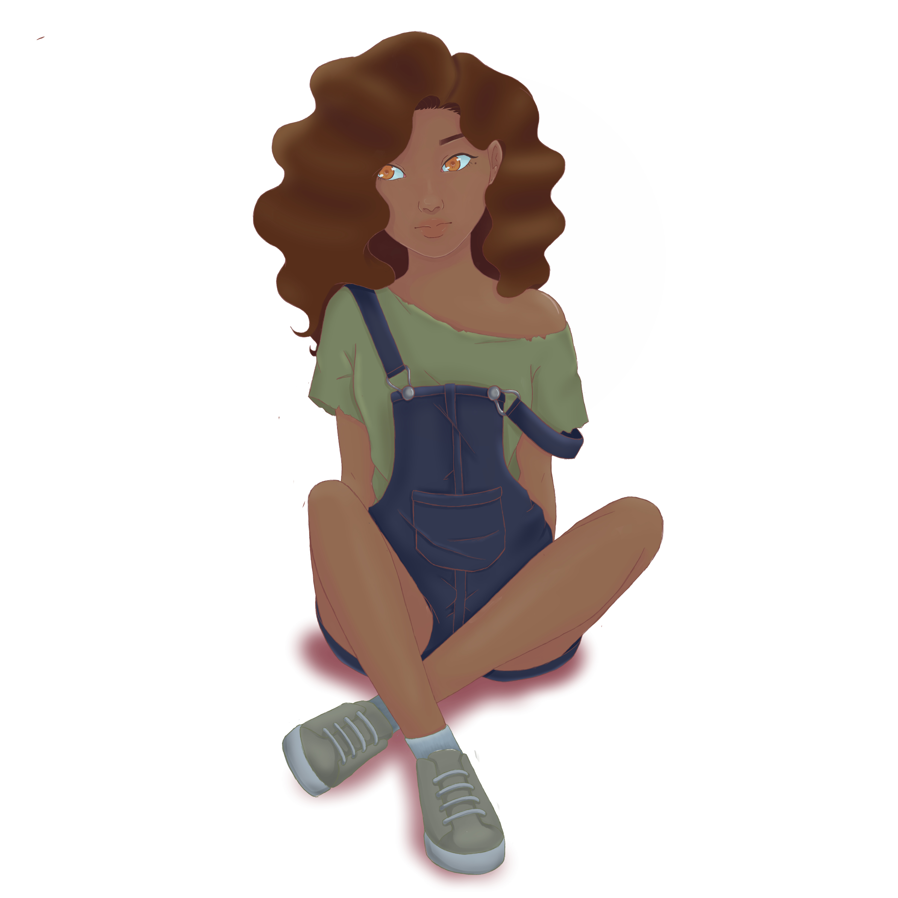

Home Who am I What do I do Vision and Mission Career and Academics References Website Storyboards
 🢁 🢁 Click Me 🢁 🢁
This websites contains 7 webpages that can be accessed through the navigation bar visible at the top of each webpages.